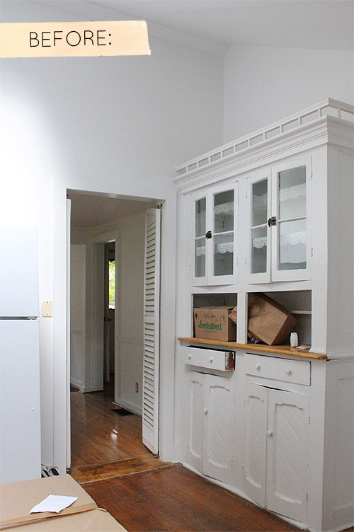
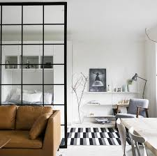
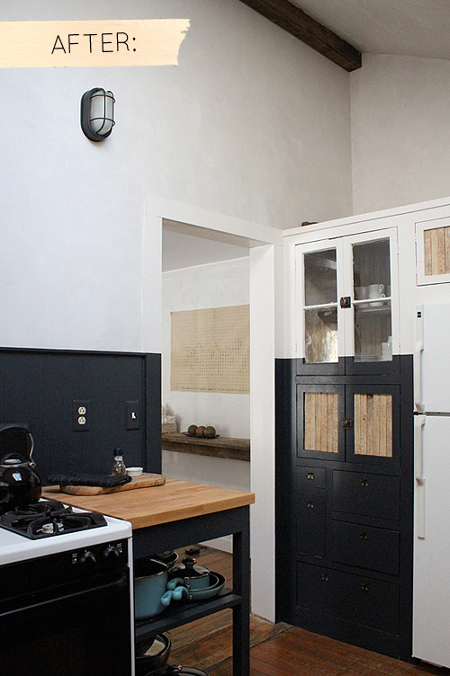

Every time I get an email from Tara Mangini and Percy Bright of Jersey Ice Cream Co., my heart skips a little beat because I know it’s going to be something good. The couple runs a vintage shop and design business here in Brooklyn where they do custom work, carpentry, wall finishes, etc. Last summer we featured their eight-week sublet in Fort Greene, Brooklyn, and before that, we featured their Philadelphia home here. In the FAQs on their website, Tara and Percy wrote that their dream job would be if someone bought a house, gave them a budget and keys and said, “Here. I trust you. Make it beautiful.” I think they’re still pinching themselves, but that’s exactly what happened in this Hudson Valley home. Consider this a little preview of Monday’s sneak peek, when we’ll be sharing the entire home. — Amy Azzarito
  